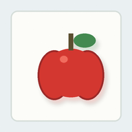
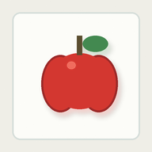
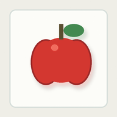
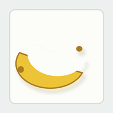
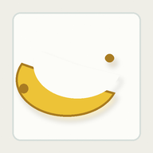
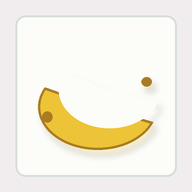
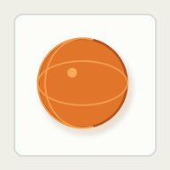
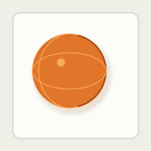
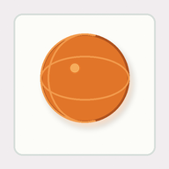

这次证明了什么
15无文字干净卡片资产
9 / 3 / 3train / held-out / contrast
8课程工作台 demo 总数，旧 5 个仍保留
0前端硬编码输出
核心变化不是“更漂亮的图”，而是课程顺序更合理：早期学习先降低背景干扰，让 AP 更稳定地把注意力放在概念主体上；真实照片仍然保留，但放到后面的泛化探测阶段。
AP 看到一张卡片时，内部过程是什么
tick 1训练卡片进入，形成 PERCEIVED 来源
tick 2形成 SDPL LearningPacket
tick 3held-out 未见卡片探测
tick 4contrast 其它水果对照
tick 5行动竞争，课程倾向进入候选
tick 6提交可审计回应
干净卡片：苹果
题目内容
这组无文字卡片在教什么水果？

config/curriculum/assets/visual/clean_cards/noun_apple_train_0.png
config/curriculum/assets/visual/clean_cards/noun_apple_train_1.png
config/curriculum/assets/visual/clean_cards/noun_apple_train_2.pngAP 最终输出：像是 苹果
AP 输出过程
| tick | 阶段 | 材料/来源 | Q 倾向 | AP 输出 |
|---|---|---|---|---|
| tick 1 | 课程材料进入 | asset::clean_card::noun_apple::train::0 · asset::clean_card::noun_apple::train::1 · asset::clean_card::noun_apple::train::2PERCEIVED / COURSE_REPLAY_ASSET | 1.0 | 看到训练材料 |
| tick 2 | 形成 SDPL 学习包 | asset::clean_card::noun_apple::train::0 · asset::clean_card::noun_apple::train::1 · asset::clean_card::noun_apple::train::2PERCEIVED / COURSE_REPLAY_ASSET | 1.0 | 把材料和中性标签联结 |
| tick 3 | held-out 探测 | asset::clean_card::noun_apple::held_out::0PERCEIVED / COURSE_REPLAY_ASSET | 1.0 | 未见材料仍能得到同类倾向 |
| tick 4 | 干扰项对照 | asset::clean_card::noun_apple::contrast::0PERCEIVED / COURSE_REPLAY_ASSET | 0.0 | 干扰项被单独标记为对照 |
| tick 5 | 行动竞争 | asset::clean_card::noun_apple::held_out::0PERCEIVED / COURSE_REPLAY_ASSET | 1.0 | 课程倾向进入可解释输出候选 |
| tick 6 | 提交可审计回应 | asset::clean_card::noun_apple::held_out::0PERCEIVED / COURSE_REPLAY_ASSET | 1.0 | 像是 苹果 |
干净卡片：香蕉
题目内容
这组无文字卡片在教什么水果？

config/curriculum/assets/visual/clean_cards/noun_banana_train_0.png
config/curriculum/assets/visual/clean_cards/noun_banana_train_1.png
config/curriculum/assets/visual/clean_cards/noun_banana_train_2.pngAP 最终输出：像是 香蕉
AP 输出过程
| tick | 阶段 | 材料/来源 | Q 倾向 | AP 输出 |
|---|---|---|---|---|
| tick 1 | 课程材料进入 | asset::clean_card::noun_banana::train::0 · asset::clean_card::noun_banana::train::1 · asset::clean_card::noun_banana::train::2PERCEIVED / COURSE_REPLAY_ASSET | 1.0 | 看到训练材料 |
| tick 2 | 形成 SDPL 学习包 | asset::clean_card::noun_banana::train::0 · asset::clean_card::noun_banana::train::1 · asset::clean_card::noun_banana::train::2PERCEIVED / COURSE_REPLAY_ASSET | 1.0 | 把材料和中性标签联结 |
| tick 3 | held-out 探测 | asset::clean_card::noun_banana::held_out::0PERCEIVED / COURSE_REPLAY_ASSET | 1.0 | 未见材料仍能得到同类倾向 |
| tick 4 | 干扰项对照 | asset::clean_card::noun_banana::contrast::0PERCEIVED / COURSE_REPLAY_ASSET | 0.0 | 干扰项被单独标记为对照 |
| tick 5 | 行动竞争 | asset::clean_card::noun_banana::held_out::0PERCEIVED / COURSE_REPLAY_ASSET | 1.0 | 课程倾向进入可解释输出候选 |
| tick 6 | 提交可审计回应 | asset::clean_card::noun_banana::held_out::0PERCEIVED / COURSE_REPLAY_ASSET | 1.0 | 像是 香蕉 |
干净卡片：橙子
题目内容
这组无文字卡片在教什么水果？

config/curriculum/assets/visual/clean_cards/noun_orange_train_0.png
config/curriculum/assets/visual/clean_cards/noun_orange_train_1.png
config/curriculum/assets/visual/clean_cards/noun_orange_train_2.pngAP 最终输出：像是 橙子
AP 输出过程
| tick | 阶段 | 材料/来源 | Q 倾向 | AP 输出 |
|---|---|---|---|---|
| tick 1 | 课程材料进入 | asset::clean_card::noun_orange::train::0 · asset::clean_card::noun_orange::train::1 · asset::clean_card::noun_orange::train::2PERCEIVED / COURSE_REPLAY_ASSET | 1.0 | 看到训练材料 |
| tick 2 | 形成 SDPL 学习包 | asset::clean_card::noun_orange::train::0 · asset::clean_card::noun_orange::train::1 · asset::clean_card::noun_orange::train::2PERCEIVED / COURSE_REPLAY_ASSET | 1.0 | 把材料和中性标签联结 |
| tick 3 | held-out 探测 | asset::clean_card::noun_orange::held_out::0PERCEIVED / COURSE_REPLAY_ASSET | 1.0 | 未见材料仍能得到同类倾向 |
| tick 4 | 干扰项对照 | asset::clean_card::noun_orange::contrast::0PERCEIVED / COURSE_REPLAY_ASSET | 0.0 | 干扰项被单独标记为对照 |
| tick 5 | 行动竞争 | asset::clean_card::noun_orange::held_out::0PERCEIVED / COURSE_REPLAY_ASSET | 1.0 | 课程倾向进入可解释输出候选 |
| tick 6 | 提交可审计回应 | asset::clean_card::noun_orange::held_out::0PERCEIVED / COURSE_REPLAY_ASSET | 1.0 | 像是 橙子 |
边界说明
Phase 18.0 证明的是：干净概念卡片资产、课程包、课程回放 runtime、Web 工作台和逐 tick trace 已经接通。它不宣称 AP 已经完成真实世界视觉识别，也不宣称大规模物体学习已经完成。下一步才适合把 Phase 17 真实照片作为泛化探测接进来，看干净卡片形成的概念倾向能不能迁移到更复杂的真实图像。